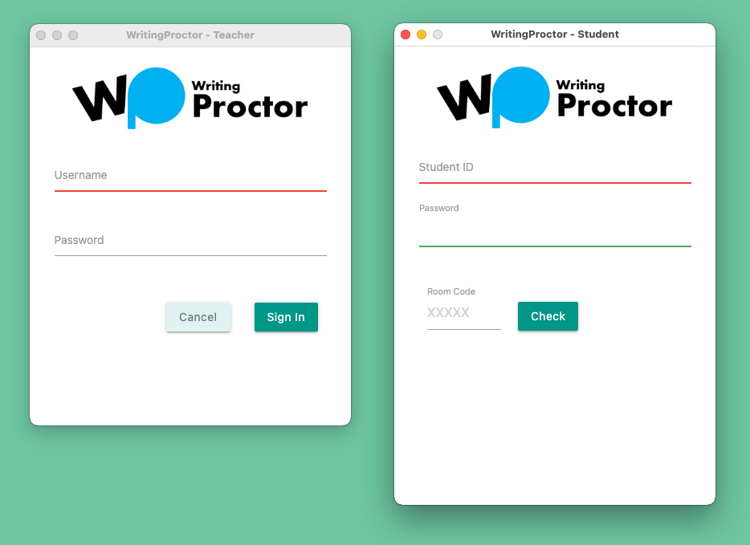

Helps you supervise your students in writing exams of any kinds both online and remotely
Get the software files for your computer.
The software comes in two sets. One is for you, given you’re a writing teacher or writing instructor, and the other is for your students.
Download the software for your computer. For Windows, download it here. For Mac OS, download it here.
The software file for Windows is a zip file. So, you have to unzip it first. Then go into the folder you've just unzipped and double-click wp-teacher.exe.
The first sign-in interface serves both for sign up and sign in. Type in a username and a corresponding password.
The update interface requires you to fill in your full name, exam subject, allocated time, and the exam question that your students can later on view when they’re answering it in their writing exams.
This interface lets you review all of the information, including the allocated time and the exam question. Make sure they’re as you’re intended them. If you want to edit any of them, click the Back button.
Notice that here you already get the unique room code that the Writing Proctor system automatically assigns it to you. Give it to you students so that they can use it to sign into your exam room later on. But keep it away from those who aren’t your students so that no one else tries to bother your exam room or compromise your exam question during the allocated session.
This interface will show a list of students who are taking the exam or who have completed it. When they completed it, you’ll be able to download their exam answers in PDF files in the download list.
The download lists also include the number of sign-ins that students have recorded during the allocated exam time. To download the PDF files, click on the PDF file links and download the files.
Give this software file to your students along with the room code.
The first sign-in interface serves both for sign up and sign in. Given you’re your teacher’s student, type in your student ID, a corresponding password, and the room code that you got from your teacher.
Note that you have to click the Check button to confirm that the room code is valid. Each room code has only 5 characters. Once the room code is confirmed to be valid, you’ll get a sign-in button.
This interface requires you to fill in your full name so that your teacher can identify your exam answer. Once you fill it in, the Next button will become active for use.
This interface shows your full name for review, notification, and the allocated time for exam so that you’re ready for the next interface, which will be full screen.
This interface is full screen. You aren’t allowed to switch away from it. You have limited editing help that you can use when you’re answering your exam question.
Your exam question is viewable at the Question button. Click it and read the question that pops up. When the allocated time remains less than 5 minutes, the Writing Proctor will pop up the notification to remind you about the remaining time.
Once the time is out, the Writing Proctor will automatically sign out and close itself down in 5 seconds. You don’t need to do anything.
However, if you want to sign out earlier, you can do so by clicking the Sign Out button.
But if you try to switch away from it with the purpose of cheating the system, it will log you out. You can sign back in. But the system will have your sign-out records that your teacher can use to question your code of honor against your exam result.
The writing interface will be in full screen. That means you won’t be able to access other programs while you’re taking the exam on the Writing Proctor. If you use a trick to switch away from the writing interface, the system will automatically log you out and record the event. You can sign back in, of course, but your multiple sign-in records can outweigh your exam result. Your teacher may use the records to question your exam result or worse invalidate it.
©2021, FianLab.com